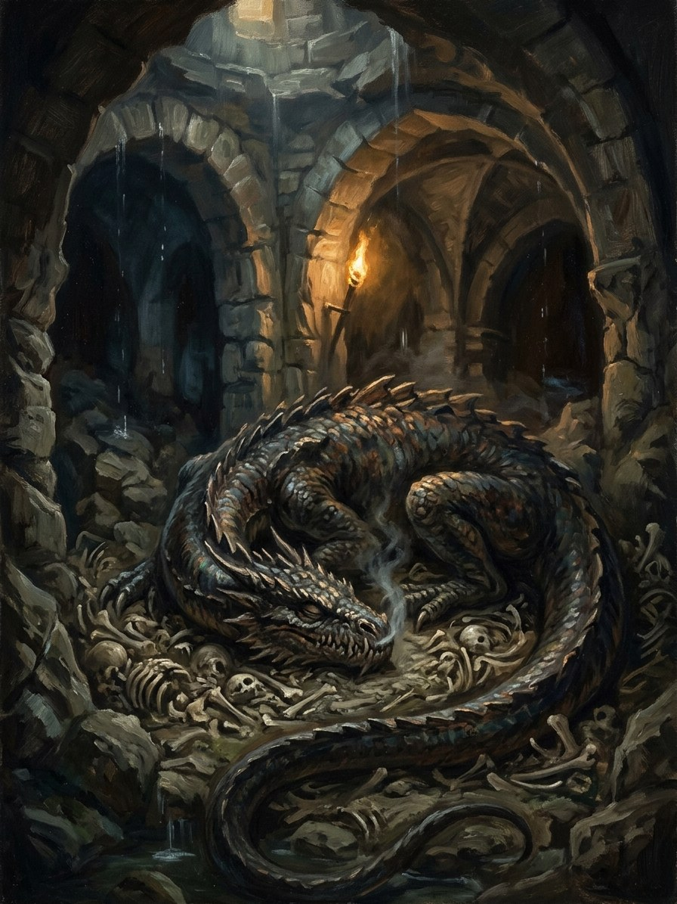

Smakas (the dragon under the cathedral)¶
Ryšiai
Shard of: Žaltys (household grass snake) — A žaltys that grew wrong, bred from the snake-blood spilled in 1387.
Origin [Historical record] the slibinas that demands tribute and is slain by a hero; smakas borrowed from Slavic smok · [The saga's invention] a žaltys that grew wrong
Tier Revenant · the dead snake-line, grown beneath a city
Danger IV deadly → V calamity
Habitat Beneath hill-forts, cathedrals and old cellars; the foundations of the Vilnius cathedral after 1387
Wants A whole town's luck; tribute, in daughters
Takes Cattle, and a town's girls. It feeds on the wealth of Vilnius
Signs Cattle vanishing; a town that prospers inexplicably while its girls disappear
Banes Fire and smith's iron (it lives deep); tribute; starving it of luck
Half-wrong truth. The folk see a dragon a hero will slay. The truth: a snake-king fed on blood instead of milk, with a žaltys's link to one house's luck swollen into a link with a whole town's. Its demand for maidens is the folk memory of towns paying daughters to keep their prosperity.
Born in 1387. The sacred snakes of Šventaragis are killed and thrown unburned into the trench for the new cathedral. Snake-blood in the ground breeds snakes, and blood spilled in hatred breeds a single smakas beneath the bishop's floor.
Feeding. On the wealth and daughters of the city above it.
Wanted. The Gold-Glutton and the Root-Mother both want it.
Fire and iron. It lives deep. Digging it out means digging up the town.
Tribute. What towns have always paid.
Starving it. If the town stops prospering, it weakens. The town stops prospering.
Smakas (the dragon under the cathedral)

Smakas (the dragon under the cathedral) · creature¶
Tipas |
creature |
Status |
The saga’s invention |
Pastaba |
Bestiary §14. Danger IV → V. |
Folk source [Historical record]¶
The usual Lithuanian folk dragon is the slibinas, often many-headed, which demands tribute (often maidens) and is slain by a hero in the international dragon-slayer pattern. Smakas is a Slavic borrowing (smok). The folk dragon overlaps with the fiery-flying aitvaras and with serpents generally.
In the saga (where the folk are half-wrong)¶
A smakas is a žaltys that grew wrong: a snake-king fed on blood instead of milk, with the žaltys’s link to a household’s luck swollen into a link with a whole town’s. After the sacred snakes of Šventaragis are killed (Book I ch. 29) their bodies are thrown unburned into the trench for the new cathedral; snake-blood in the ground breeds snakes, and blood spilled in hatred breeds a single smakas beneath the bishop’s floor. Its demand for maidens is the folk memory of towns paying daughters to keep their prosperity. Eglė’s žaltys remains the last living snake of the old line; the smakas is the line’s revenant.
Signs & habitat¶
Under hill-forts, cathedrals and old cellars; cattle vanishing; a town that prospers inexplicably while its girls disappear.
Before / after the Unbinding¶
Before: very rare, put down by the Krivis’s people. After 1387: one beneath the Vilnius cathedral, feeding on the city’s wealth; the Gold-Glutton and the Root-Mother both want it.
Banes, wards, bargains, and their cost¶
Fire and smith’s iron (it lives deep; digging it out means digging up the town). Tribute, as towns have always paid. Starve it of luck: if the town stops prospering it weakens, and the town stops prospering.
Danger level¶
IV deadly → V calamity.
Story hooks¶
Books II–V: „The Smakas under the Cathedral“, the revenant of the slaughtered sacred snakes, grown monstrous under the bishop’s floor.
Sąsajos¶
graph LR
smakas["Smakas (the dragon under the cathedral)"]
zaltys["Žaltys (household grass snake)"]
smakas -->|Shard of| zaltys
style smakas stroke-width:3px